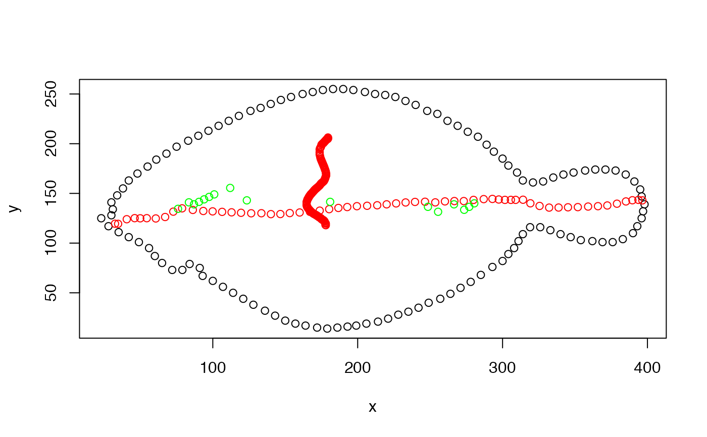

free.ml.ang.RdInternal functions used in kin functions for calculating the long-axis midlline spanning a closed contour.
free.ml.ang estimates a midline by finding angular tips that lie in end regions of the long axis of a contour and bisects the contour according to these tips.
free.ml.hull estimates a midline by finding the most distant coordinates in the convex hull and then bisects the contour according to these tips.
free.ml.del estimates a midline through Delaunay triangulation and Voronoi tesselation.
free.ml.ang(out = NULL, smooth.n = NULL, dens = NULL, red = NULL) free.ml.hull(out = NULL, smooth.n = NULL, dens = NULL, red = NULL) free.ml.del(out = NULL, smooth.n = NULL, red = NULL, dens = NULL)
| out | a matrix of named x,y values describing a closed outline (contour) |
|---|---|
| smooth.n | the number of smoothing iterations. See Details |
| dens | integer, the factor by which to densify the contour. Will slow down midline estimations but may increase the likelihood of finding a pointed tip. If 'NULL', the original contour in |
| red | numeric, between 0-1 the proportion of contour coordinates to sample. Will speed up midline estimations. If 'NULL', the full contour in |
A list with the following components:
ml: a data table consisting of the x,y coordinates of the midline and their index value
cont.sm: a data table containing the smoothed outline according to coo_smooth. If 'smooth.n=0', this will be identical to the input 'out'.
cont.sides: a data table containing the smoothed outline factorized by side 'a' or 'b' and index.
free.ml.ang estimates the midline by first creating a convex hull of the contour and then finding candidate tips that are farthest from one another with coo_truss. This and free.ml.hull therefore assume the contour is elongate. The candidate tips are then refined by finding coordinates whose index are within the 5
free.ml.hull creates a convex hull of the contour and then finds the two coordinates in the hull that are farthest from one another. As with free.ml.ang, this function then bisects the contour across an axis determined by the tips and calculates the midline as midpoints defined between all pairs of coordinates with the same index value
free.ml.del estimates the midline by first finding candidate tips of the contour. Midline coordinates are retrieved through Delaunay triangulation and Voronoi tesselation. Triangulated points that lie within the contour are used to build a distance-weighted minimum spanning tree that expands until the the path intersects with the contour. The extrema of the midline path are then indexed as the first and last according to their distance from the candidate tips.
The use of free.ml.ang and free.ml.hull may be more appropriate for complicated outlines (i.e., those with appendages). The use of free.ml.del produces better results when contour regions overlap (i.e, kinks or snakes back on itself), but produces less precise midlines for complicated contours and is slower for high resolution outlines. Reducing the resolution with 'red' may hasten the speed.
'smooth.n' is passed to the 'n' parameter of coo_smooth, which smooths coordinates using a simple moving average. Users should be careful not to oversmooth. If the input contour has few points (say just a 100 or so extracted from kin functions run on low resolution images), much detail will be lost. In general, 'smooth.n' should be <5.
If 'red' is specified, the resolution of the contour is reduced by invoking coo_interpolate with 'n' of this function equal to 'red' times the number of coordinates in the original contour.
For input contours with few points (say >100), users should consider densifying with 'dens'. For example, an input contour with 100 coordinates would be transformed to one of 200 with 'dens=1'.
A humble thanks to Barry Rowlingson of Lancaster University for his answer to a post on Stack Overflow that inspired the logic behind free.ml.del.
These functions do not make decisions about position, i.e, output values of 'n', although ordered along the long axis of the contour, may be differently arranged given the rotation of the contour.
# a lateral midline, but a midline nonetheless require(Momocs) o <- Momocs::nsfishes$coo[[136]] colnames(o) <- c("x","y") plot(o)#note the difference #fml2 <- free.ml.ang(o) #points(fml2$ml$x,fml2$ml$y,col="blue") # with free.ml.del, a poorer choice fml3 <- free.ml.del(o) points(fml3$ml$x,fml3$ml$y,col="green")#free.ml.del with the contour of a swimming worm, C. elegans #from SI Video 3 of Pierce-Shimomura, et al., 2008. # Genetic analysis of crawling and swimming locomotory patterns in C. elegans. #Proceedings of the National Academy of Sciences, 105(52), pp.20982-20987. cel <-system.file("extdata", "celegans.csv", package = "trackter") out <- as.matrix(read.csv(cel)) #smooth it out.sm <- Momocs::coo_smooth(out,n=1) fml.del <- free.ml.del(out.sm) points(fml.del$ml$x,fml.del$ml$y,col="red")